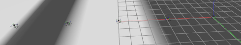

Welcome to the project showcase!
During my time at Cal Poly Pomona, I spent two years working in the Northrop Gruman Collaboration Project.
Through this project, I participated in responding to a Request For Proposal. Our teams were also in required to
take part in a Product Design Review, which gave us a real world engineering experience in which we
presented our designs to real engineers working at Northrop Gruman. This allowed me to gain experience
in both presenting my ideas in a professional manner, as well as responding to feedback by updating the
design of the product.
I was a part of the electrical team for the unmanned ground vehicle, mainly
placed in charge of PCB design. Some of my designs can be seen below. My team also soldered the parts onto
the finished designs when they arived, giving me experience in soldering both throughput and surface mount
devices.
During my time at Cal Poly Pomona, I began working with a simulation software called Gazebo. Using this software, I created a system where multiple drones can be controlled at the same time. Below, you can see an example showing 5 drones.

When it comes to the Raspberry Pi 5, I have been trying to create a secure bootloader in which program files uploaded to the RPi must be encrypted before they will run on the system. This will help ensure that no malicious software can be uploaded onto the RPi.